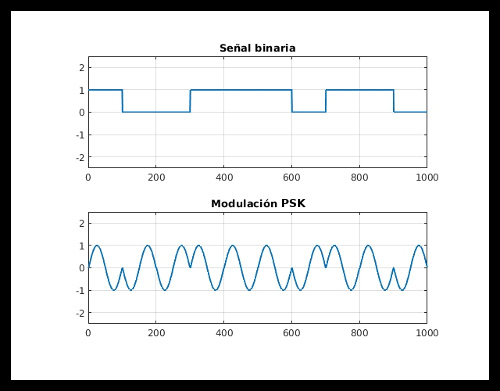
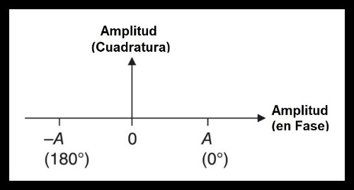

Modulación por desplazamiento de amplitud (ASK)
Las técnicas ASK utilizan diferentes niveles de amplitud para representar 0 y 1. Por ejemplo, un sistema modulación por desplazamiento de amplitud de dos niveles se muestra en la figura:

Como antes, la señal transmitida puede escribirse con su frecuencia portadora como una forma de onda cosenoidal, con una amplitud variable en el tiempo A(t). La señal de información está incrustada en la amplitud de la portadora con A(t)= a representando a 1 y A (t) = b representando un 0.
Como se muestra en la figura, la frecuencia portadora es modulada por estas dos amplitudes diferentes, y se transmite un bit de información en cada intervalo de tiempo de transmisión. El lado del receptor extrae la información midiendo la amplitud de la señal portadora recibida y comparándola con un nivel de referencia para detectar si se ha transmitido un 1 o un 0.
La gráfica muestra la constelación de señal ASK binaria, donde el eje x muestra la amplitud de la señal, y a y b son los niveles de señal correspondientes a 0 y 1.
El receptor mide la amplitud de la señal recibida y la compara con el medio punto de valor (a+b)/2.
Modulación por desplazamiento de fase (PSK)
La señal portadora A∗cos(2πf t+θ), la información de modulación también puede integrarse en la fase portadora θ.

En la modulación de fase, la señal transmitida se escribe como A∗cos[2πf t+φ(t)] donde φ(t) denotala fase de desplazamiento de la señalal comienzo del intervalo de tiempode transmisión, o tiempo (t). En la figura se ilustra una constelaciónde señales de codificación de despla-zamiento de fase binaria (BPSK).
Donde la fase de desplazamiento φ(t) = 0 indica la transmisión de un 0 y φ(t) =180 denota la transmisión de un 1

El receptor vuelve a comparar la fase de la señal recibida con un nivellímite, en este caso amplitud = 0, y detecta si se transmitió un 0 o un 1